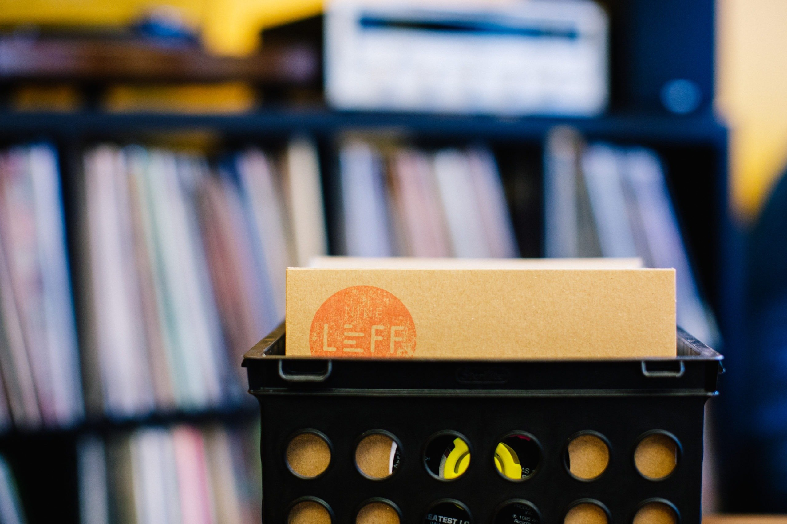
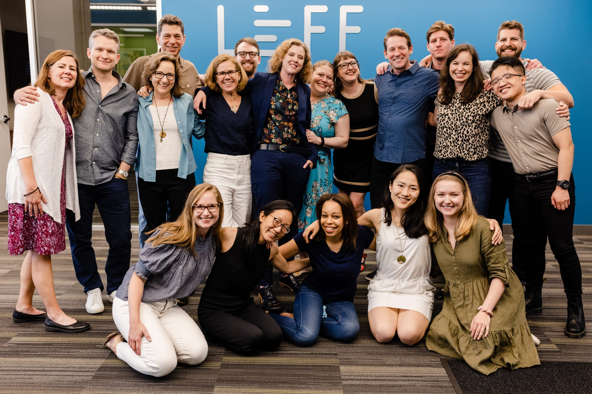
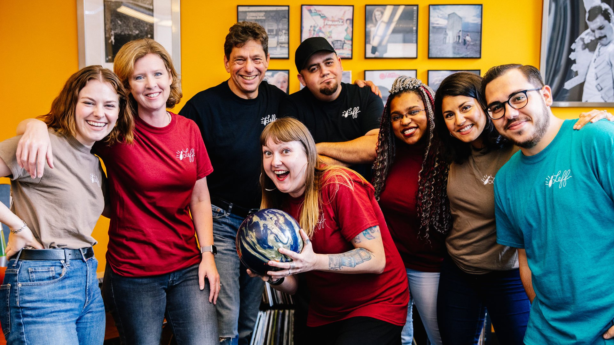
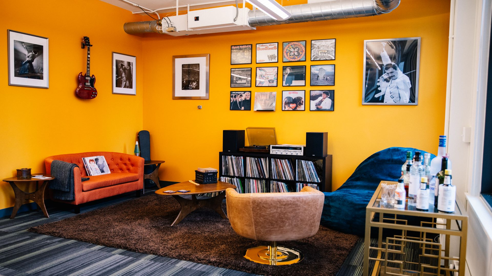

01
The rules of a great office baby shower
Cheesy, dull, women-only baby showers just don’t fly at Leff. Annie highlights the rules for throwing an office baby shower that everyone can enjoy (spoiler: there should be booze).
03
A taste of the old normal: Reflections on returning to the office
It’s something many of us have experienced this year: the confluence of emotions that come with returning to the office for the first time. In this heartfelt post, some of us share our thoughts about being in the office and meeting some of our colleagues in person for the first time.
02
Why I work at Leff
The Leff office is typically swirling with laughs, friendly debates, politics, family, you name it. Annie’s perspective on why she loves working at Leff through the lens of an office outing is just the right amount of sentiment and hilarity you need to be convinced that…Leff is sometimes weird.
Leff’s company culture is something we pride ourselves on. We love
to have a good time, and we’re always looking for ways to be better—a better company to work at and work with, better and more equitable in terms of hiring, better at living our values. We also understand that a positive work environment and healthy work-life balance are key to attracting and retaining talent. That’s why we consistently share our musings about culture and work life on our blog.
Below is a roundup of our most-read blog posts about culture, reflecting our feelings about our colleagues, how some of us manage being working moms, and how we celebrate and lift each other up.
04
On coming back to work: Life after maternity leave
For some moms, going on maternity leave is extremely difficult, adjusting to fully separating yourself from former work responsibilities and not knowing the latest office happenings. For others, returning to work after maternity leave is the hardest part. Annie shares her challenges and how she found her rhythm again through this very candid piece.
05
Moms of Leff: Balancing kids and work during a pandemic
The moms at Leff are what one would call “cool moms”—you know, the type who might give their kids a notebook to teethe on while they’re taking a call or bring a coffee thermos of wine to the park. They make it look easy, but make no mistake: parenting during a pandemic (or really ever, for that matter) is not for the weak. This roundtable reveals the hacks, woes, and very funny mishaps of being a working mom during a pandemic.
06
Scaling editorial and design: A peek inside the Leff office
Curious to see what journey our content takes from editorial production to design? This unique interactive lets readers click on different areas of the Leff office to see where content flows. It also shows how we collaborate and enjoy time listening to good tunes in the office.
07
Why I still work at Leff
The answers may not be what you’d expect. In this follow-up post, Annie reflects on her past four years at Leff, including being promoted, having a child, the company tripling in size, and much more—all contributing to why she (still) loves Leff.
08
How to keep company culture alive remotely: A roundtable with Leff leaders
Back to top
Over the past year, many companies have sought unique ways to keep teams engaged and connected from afar, but sometimes Zoom happy hours just don’t cut it. Leff leaders share advice and opinions on keeping the (culture) spark alive.




